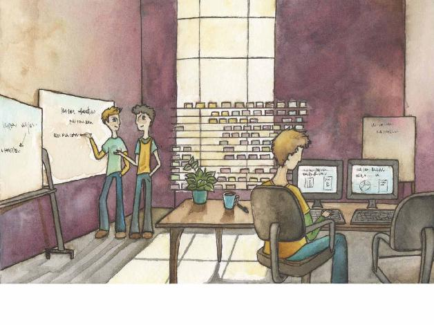

No hay como un buen ambiente
“Build projects around motivated individuals. Give them the environment and support they need, and trust them to get the job done.”
Agile Manifesto
Introducción
El Ford Taurus fue un producto que marcó un hito en la historia de la compañía, tanto por su innovador diseño aerodinámico que cambió el mercado en el que se insertó como por su éxito de ventas con casi 7 millones vendidos a través de 21 años de producción. Cuando Ford quiso repetir este éxito133, se encontró con que todo el conocimiento de la organización sobre ese proyecto se había esfumado con la partida de los integrantes del equipo. Es decir, no quedaba nadie de aquellos que habían sido responsables.
Lo mismo nos pasa a nosotros en situaciones similares, proyectos difíciles pero exitosos que dejan claro para el equipo que mejor sería trabajar en otra parte. En todos esos casos, la organización se queda con un proyecto exitoso, pero sin la gente que lo hizo posible y sin la capacidad de repetir la experiencia.
La filosofía ágil hace foco en las personas, como elemento fundamental del trabajo intelectual y creativo, en oposición a otras concepciones deshumanizantes que conciben a las personas como piezas intercambiables de una maquinaria. Este nuevo foco modifica no solo la concepción que tenemos del equipo y de la organización, sino también del espacio laboral y de muchas prácticas ampliamente aceptadas en la cultura moderna del trabajo.
Este capítulo presenta nuestra mirada sobre los equipos de desarrollo y cómo estos se vinculan con las organizaciones a las que pertenecen. Una forma de pensar esta relación es entender que tanto los productos como los equipos que los construyeron son el resultado del proyecto llevado a cabo por la organización134.
El equipo ideal
Los métodos ágiles se enfocan en el trabajo de equipos desarrollando software, porque la mayoría de los sistemas modernos son construidos por equipos, no por individuos, dado su tamaño y complejidad. En esta sección recorreremos los aspectos más significativos del trabajo en equipo al estilo ágil. Un equipo ideal debe:
• Autoorganizarse.
• Tener responsabilidad solidaria.
• Colaborar.
• Controlar dejando hacer.
• Ser armonioso.
• Ser multidisciplinario y multifuncional.
Autoorganizarse
Esta es una de las características centrales de todo equipo ágil, se menciona explícitamente entre los principios del Manifiesto ágil [Beck 2001]:
“Las mejores arquitecturas, requisitos y diseños emergen de equipos autoorganizados135.”
Un equipo ágil es un equipo autoorganizado, lo cual significa que son los propios miembros quienes organizan su trabajo atendiendo a las restricciones del contexto. Esto implica que:
• No hay una persona que indique a cada miembro qué ni cómo hacer estas tareas necesarias para cumplir con los compromisos que han asumido, sino que los propios miembros del equipo las identifican y distribuyen.
• El equipo no solo se organiza para llevar adelante el trabajo, sino que también monitorea su desempeño y adapta su forma de trabajo para mejorar sus resultados.
Si bien estas recomendaciones pueden resultar chocantes para gente acostumbrada a contextos de comando y control (donde el jefe de proyecto asigna las tareas), la realidad es que los que hacen el trabajo saben hacerlo mejor que sus jefes. Además, como son tareas complejas, con dependencias entre sí y aspectos intelectuales o tecnológicos que requieren conocimiento detallado del tema, no es fácil encontrar jefes con la capacidad adecuada. Aún en casos de aquellos con la experiencia y las habilidades necesarias, es difícil organizar a un grupo de gente exitosamente. En particular, porque requiere conocer las sutiles habilidades de cada uno, su actitud y energía emocional en el día a día y las formas óptimas de comunicación. Además, es común que sea difícil coordinar el trabajo para lidiar con las dependencias y que otros aspectos técnicos de la solución afecten también a la organización.
Por otra parte, ¿cómo esperar que alguien asuma seriamente un compromiso si no se le da la libertad de planificar el trabajo necesario para llevarlo a cabo? [Humphrey 2001]. La forma más fácil de probar esta idea es evaluar el resultado de imponer plazos arbitrarios a un equipo contra permitirle al equipo definir sus propias fechas. En el primer caso, es probable que el equipo acepte las fechas impuestas, porque no tiene otro remedio, pero su motivación para cumplirlas será menor. En el segundo, donde se apropia de esas fechas porque es el encargado de definirlas, el equipo se comprometerá más profundamente con el resultado.
Es importante no malinterpretar la autoorganización: que el equipo sea autoorganizado no significa que haga lo que le parezca. No estamos diciendo que no hay lugar para la gerencia en un entorno ágil, sino que interviene de otra manera, guiando al equipo, orientando los comportamientos que surjan de su libre interacción, proveyendo foco, removiendo obstáculos y facilitando la interacción con el resto de la organización136. La autoorganización tampoco implica que el equipo trabaje aislado137. Es importante que mantenga una comunicación fluida con la organización en general y con la gerencia en particular, para que esta tenga visibilidad constante138 del avance del proyecto. Esto le permitirá al equipo obtener feedback y generar mayor confianza para cumplir con su responsabilidad.
Tener responsabilidad solidaria
Todos los miembros del equipo deben asumir una responsabilidad compartida por los resultados. El impacto principal de este principio es que los miembros deben dar de sí todo lo posible para lograr los resultados, en oposición a proyectos en los cuales cada uno hace solo lo que le fue asignado. La responsabilidad solidaria asume la autoorganización, puesto que si las tareas son asignadas por un jefe de proyecto o gerente, entonces este tiene la responsabilidad por el proyecto completo y solo delega las tareas139. Una situación cotidiana en la que se observa claramente esta responsabilidad compartida es al final de cada iteración, cuando se muestra el producto construido. En ese momento, todo el equipo participa de la reunión de revisión y da la cara por los resultados obtenidos.
La relación con la gerencia y el apoyo de esta es una condición necesaria pero no suficiente para que un equipo pueda trabajar de forma autoorganizada y con responsabilidad solidaria. Existen otras condiciones internas que deben darse para que esta organización sea posible: el equipo debe compartir un objetivo y una visión, y sus miembros deben estar convencidos de que la mejor forma de alcanzarlo es trabajando colaborativamente asumiendo la responsabilidad por la planificación, la ejecución, el control y la adaptación al contexto de proyecto a medida que este avanza.
Colaborar
Rob Austin y Lee Devin definen la colaboración como la capacidad para reconcebir140 nuestras propias ideas a la luz de las ideas de los demás. Esta definición es un poco más precisa que la idea que tenemos de ayudar a otros o trabajar en conjunto. Requiere soltura141, es decir, la capacidad de no aferrarse a las propias ideas, de modo tal de poder cambiarlas al escuchar las de los demás.
La colaboración tiene como objetivo generar en el grupo ideas mejores que la mejor de las ideas de los miembros individuales. Para comprender este concepto puede servir imaginar un ejemplo de interacción entre los miembros de un equipo. Supongamos que cada persona propone una idea, y luego todos votan la mejor de las ideas propuestas. La idea elegida solo puede ser tan buena como la mejor idea individual. En los casos en que hay fuertes restricciones, puede ocurrir que haya un empate y no haya acuerdo sobre cuál es la mejor idea. En ese caso, supongamos que se utiliza una solución de compromiso, en la cual cada una de las ideas más votadas resigna algún aspecto en favor de otra idea con la misma cantidad de votos. Con esta forma de acuerdo, lo más probable es que la idea resultante sea incluso peor que las ideas más votadas a partir de las cuales fue concebida.
Por el contrario, en el trabajo colaborativo la idea creada por el equipo es mejor que la mejor de las ideas individuales, porque se nutre de los aspectos buenos de las otras ideas, pero mantiene la coherencia propia de haber sido concebida y reconcebida en lugar de recortada. Las ideas fruto de la colaboración tienen la cualidad curiosa de no ser atribuidas a ninguno de los integrantes del equipo, sino que emergen de su interacción.
Controlar dejando hacer142
Como vimos en la sección de autoorganización, la gerencia necesita dar al equipo la libertad para hacer su trabajo de la mejor manera posible. Este mecanismo, como opuesto al mandar y controlar, se conoce como controlar dejando hacer. Mediante el acto de liberar al equipo, la gerencia logra que el equipo dé más de sí que ejerciendo presión.
Daniel Pink [Pink 2011] propone que la motivación intrínseca del trabajo proviene de tres aspectos: autonomía, desafío y maestría. La autonomía está satisfecha por la autoorganización y la responsabilidad solidaria. El desafío de crear el producto se incrementa con el desafío de organizar el trabajo, y la maestría implica la búsqueda constante143 de mejorar su capacidad para hacer su trabajo.
Esta actitud no aparece solo en la relación del equipo con la gerencia. También implica soltura en el propio equipo, dejar el ego y el miedo para afrontar las posibilidades y llegar más lejos de lo que parecía posible. En un equipo, la soltura se expresa en:
• Gente dispuesta a escuchar activamente.
• Gente dispuesta a cambiar de opinión (que no es lo mismo que ceder).
• Poca tensión puesta en la tarea144.
• Superiores que confían en el equipo y le dan libertad de maniobra.
La falta de soltura se muestra en:
• Jefes que miran por encima del hombro de las personas del equipo145.
• Personas que siempre creen tener la razón.
La soltura es una condición fundamental de los equipos ágiles (y de los colaborativos), porque es necesaria para su interacción armónica.
Ser armonioso
Para ser efectivo, un equipo colaborativo debe trabajar en armonía. Esto no significa que no haya conflictos: en un equipo armónico hay y debe haber conflictos sobre el trabajo y la mejor forma de encararlo, pero no debe haber conflictos personales. Los conflictos sobre el trabajo promueven la aparición de nuevas ideas y reducen la probabilidad de estancamiento en sus antiguas formas de trabajo. Los conflictos personales, en cambio, drenan la energía en disputas sin valor y limitan la capacidad de los miembros para tomar decisiones apropiadas al mezclar egos, celos, envidias y otras disfunciones en el trabajo diario.
Una condición fundamental de la armonía es la confianza, tanto interna como en la interacción con el exterior. La confianza se construye a partir historias en común, de recuerdos compartidos y de haber experimentado como el otro es coherente entre su decir y su hacer [Larsen 2009]. Sin embargo, cuando se constituye un equipo nuevo no contamos con esa historia y es necesario trabajar en conjunto. En esos casos, es necesario asumir que el otro es confiable hasta que se demuestre lo contrario [De Marco 2002], y otorgarle nuestra confianza antes de que la hayan merecido. Recíprocamente, solo podremos pedir la confianza de otros si estamos dispuestos a dar la nuestra. Por ejemplo, si nuestro gerente confía en nosotros lo suficiente para aceptar que nuestras estimaciones son honestas, y acepta las fechas de nuestros compromisos por la misma razón, es natural que nosotros confiemos en que va a ayudarnos a quitar los obstáculos que surjan en el camino. Si, por el contrario, duda de nuestro compromiso, es poco probable que podamos exponernos a pedirle ayuda en una situación de riesgo.
La experiencia de trabajar en un equipo consolidado, con una historia común y la capacidad de funcionar armónicamente, será muy satisfactoria para sus miembros y promoverá que hagan su mejor esfuerzo para lograr los objetivos del proyecto.
Ser multidisciplinario y multifuncional
Como en los equipos ágiles la responsabilidad por el proyecto es solidaria, es necesario contar con todas las habilidades necesarias para completarlo. Un ejemplo concreto de esta idea es la participación de los responsables de las pruebas como parte del equipo. El principio es simple, sino se tienen todas las capacidades para realizar el trabajo correctamente, entonces no se puede tener la responsabilidad asociada. En el ejemplo de las pruebas, si el equipo realiza un producto que no pasa las pruebas, entonces no ha terminado el trabajo y no debe entregarlo.
Por multifuncional entendemos un equipo que integra todas las actividades del proceso de desarrollo: requerimientos, arquitectura, diseño, pruebas y construcción. Por multidisciplinario, que integra las habilidades de diferentes personas: clientes, analistas, diseñadores gráficos, arquitectos, programadores, testers, etc.
La organización para el equipo ideal
El espacio de trabajo
Pasamos alrededor de un tercio del día en nuestro espacio de trabajo, lo cual es demasiado tiempo como para no estar cómodos. Este solo hecho debería ser suficiente justificación para prestar cierta atención al mobiliario de nuestro espacio de trabajo. En un contexto ágil este tema merece aún mayor atención, debido a que hay un mayor foco en las personas. Como hemos mencionado, la comunicación juega un rol muy clave en un contexto ágil y nuestro espacio de trabajo puede facilitar tanto la comunicación como también dificultarla.
Si esperamos que la información fluya, que la propiedad del código sea compartida, que haya confianza entre los miembros del equipo y que el diseño sea emergente, entonces resulta importante que el equipo esté sentado junto, trabajando en la misma habitación. Esto puede parecer obvio para algunos, pero en algunas organizaciones suele ocurrir que hay miembros de un mismo equipo trabajando en salas distintas, o dentro de una misma pero sentados en forma dispersa mezclados con miembros de otros equipos. En [Davies 2009] se recomienda que lo ideal sería que el espacio sea exclusivo del equipo.
Prácticas extremas
Extreme Programming va un poco más allá de las prácticas aquí mencionadas y propone algunas adicionales. Por ejemplo, que el cliente trabaje con el equipo de desarrollo en forma continua, lo cual lo obliga a tener un puesto de trabajo permanente junto al equipo.
Otra práctica de XP es la semana de 40 horas146, la idea es que el equipo pueda mantener un ritmo de trabajo sostenible, para un equipo puede que sean 40 horas, para otro puede que sean 35 o 45, pero 60 horas semanales no es un ritmo sostenible.
Algunos artefactos de mobiliario típicos de ambientes ágiles suelen ser:
• Pizarra: para que el equipo pueda realizar esquemas a la hora de debatir un diseño, hacer diagramas, anotar recordatorios, etc. Esta pizarra debe estar acompañada de marcadores de varios colores y un borrador.
• Tablero147: es otra pizarra o solo un espacio reservado en una pared, donde el equipo pega las notas autoadhesivas con sus tareas, story cards, impedimentos, etc. En general, está dividido en columnas donde cada una representa un estado: pendiente, en progreso, completo. Siempre debe estar acompañado de un mazo de notas autoadhesivas. Este tablero se actualiza diariamente a medida que se completan las tareas. Para más detalle sobre el uso y la forma de organización de este tablero, ver el capítulo “Irradiando información”.
• Semáforo de integración: es un indicador del estado del build de integración continua. En el caso más simple, suele ser un monitor que muestra el tablero del servidor de integración continua; en algunos equipos suelen ir más allá y utilizar diversos artefactos para reflejar esta información: sirenas, luces, etc.
• Sillas adicionales: para que puedan sentarse el/los clientes, cuando vengan a trabajar con el equipo.
Figura 15.1. Espacio de trabajo apropiado para un equipo ágil.

Horarios de trabajo
Algunos equipos de trabajo suelen enfrentarse a situaciones del tipo: “esta funcionalidad tiene que estar lista esta semana cueste lo que cueste”. Situaciones de este estilo, en que los compromisos148 son impuestos y no gestionados por el equipo suelen ser contraproducentes149 y llevan a que la gente deba trabajar horas adicionales. No está mal hacerlo en forma excepcional, pero si se convierten en una cuestión habitual, entonces estamos en problemas. El tiempo extra en el trabajo reduce el tiempo dedicado a cuestiones personales, lo cual muchas veces dispara diversos inconvenientes, que a la larga también impactan en el proyecto. Los ambientes ágiles ponen un especial foco en la persona, prestan atención a cuestiones de índole humana como el balance trabajo-vida personal. En este sentido, la práctica ya mencionada de 40 horas semanales propone que bajo ninguna circunstancia un equipo trabaje extra dos semanas seguidas. El trabajo extra en forma continua genera situaciones que resultan insostenibles en el tiempo para cualquier equipo. Si este necesita trabajar extra dos semanas seguidas, entonces el proyecto tiene un problema bastante más grave que va más allá y debe ser resuelto de otra forma (mediante la renegociación de compromisos150).
Otra cuestión común es el horario de entrada. Mientras que en algunas organizaciones se pide a los empleados llegar a determinada hora, otras adoptan políticas más flexibles. Más allá de lo que la organización requiera o proponga, en un ambiente ágil es conveniente que los miembros del equipo trabajen en la misma banda horaria, ya que posibilita la utilización de ciertas prácticas como programación de a pares y las reuniones diarias entre otras. En general, al comenzar un proyecto el equipo define un horario para la reunión diaria y todos los miembros se comprometen a estar en la oficina en el horario establecido.
En resumen
Uno de los factores principales de éxito en un proyecto de desarrollo de software son las personas. Como vimos, las condiciones para constituir equipos efectivos no son triviales, ni dependen solo de sus miembros. La generación de condiciones favorables de trabajo, desde las instalaciones y el mobiliario hasta los horarios y reglas de convivencia son fundamentales, y requieren el apoyo de la gerencia. Además, las interacciones entre los miembros del equipo, incorporando diferentes miradas y habilidades, deben tejerse cuidadosamente para lograr la colaboración y armonía necesarias para producir los excelentes resultados que se esperan.
133 La historia está tomada de [Brown 2000], pág. 122, quienes a su vez la toman de Davenport y Prusak.
134 Rob Austin y Lee Devin llaman a esta característica “Play”, juego de palabras en el inglés original asociado al teatro, donde el producto es la obra (play) y la interacción creativa que desarrolla el equipo se concibe como un juego (play).
135 La versión original en inglés es “The best architectures, requirements, and designs emerge from self-organizing teams”.
136 En el capítulo “¿Quién manda a quién?” tratamos en detalle el tema del liderazgo.
137 Como muchas veces ocurre en entornos donde el concepto de empowerment se aplica sin criterio orgánico ni actitud colaborativa. Véase [Coplien 2004], pág. 294.
138 Véase el capítulo “Ir radiando información”.
139 Como expresa la sabiduría popular: “la responsabilidad no se delega”.
140 El término “reconcebir” fue acuñado por Lee Devin. Véase [Austin 2003], pág. 101.
141 “Release” en el inglés original, véase [Austin 2003]. Preferimos soltura a la traducción alternativa “liberación”, que también es válida. Véase la sección “Controlar dejando hacer”.
142 En inglés “Control by release”.
143 Vale aclarar que este es un buen punto a considerar a la hora de contratar, no algo que todas las personas compartan en la misma medida.
144 Como en la premisa budista de “atención sin tensión”.
145 En los equipos colaborativos, por lo menos, la mirada del dueño no engorda el ganado.
146 Semana de 40 horas es la traducción de los autores para 40 hour-week.
147 Algunos equipos utilizan como tablero una pizarra magnética. La realidad es que la herramienta no es relevante, sino que lo importante es que la información esté visible.
148 Véase el capítulo “Planificación constante” para un desarrollo más preciso de cómo recomendamos establecer compromisos.
149 De acuerdo a Mary Beth Chrissis, Watts Humphrey solía decir que podía conocer en media hora el nivel de madurez de cualquier organización preguntando a la gente que hacía el trabajo cómo establecía sus compromisos [Chrissis 2012].
150 Véase el patrón organizacional “Recommitment Meeting” en [Coplien 2004], pág. 60.